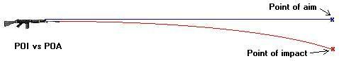
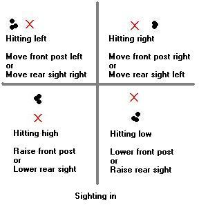
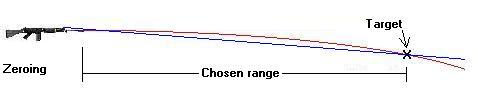
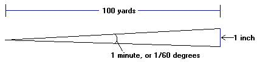
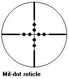
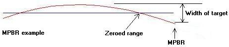

Mathematics of Shooting
by
Columba
|
Despite what the VPC and the Brady Bunch would like people to believe, shooting can be as much of an intellectual exercise as a physical one. A few months ago I got some feedback from a gentleman asking about some of the mathematical aspects of shooting, and I believe that many of those topics are important enough that they deserve to be covered in article form. To become truly proficient with a rifle, you have to understand the physics that dictate bullet behavior. But don't worry - I'm no physicist or mathematician, and I'll try to keep everything in plain English (and hopefully interesting, too!). This discussion will include some quite simple concepts, but as they say, excellence lies in mastery of the basics. Let's start with the most basic and most essential thing - sighting in, or zeroing, a rifle. After that, we can look at issues of measuring accuracy and handy zeroes to use. I won't be covering issues of bullet aerodynamics or terminal performance, as I don't know enough about them to be confident trying to explain them to others. Anyway, let's begin with a couple definitions of terms I'll be using through this article: Point of aim (POA): this is where a gun's sights say it will hit. Point of impact (POI): this is the place where the bullet actually hits. Sighting line: this is the imaginary straight line created by aligning the front and rear sights. Zeroing Obviously, you must be able to predict where a bullet is going to hit before you can hit anything with a firearm. The sights on a rifle are a tool for making such a prediction, but they are not a perfect predictor. Sights (including scopes, lasers, and red dot sights) all work by creating an imaginary straight line along the top of a firearm to a target. Bullets, however, don't fly in straight lines - they fly in arcs. As soon as a bullet leaves the muzzle of a rifle, gravity begins pulling it down. So if your sights are perfectly aligned with your barrel, you will have a situation like this (not to scale):  The difference between your POA and POI is how close you come to hitting the target. As you can see in the above graphic, that distance changes as the target's distance from your gun changes. Up close, the bullet drops little, but farther out is drop much more (for the math-oriented, the amount of drop is proportional to the square of the bullet's flight time). Thus, any hypothetical sight setup will be dead on only at one specific range (or two, but we'll get to that in a minute). The standard practice with rifles is to set the sight so that the sighting line and the path of the bullet intersect at the range where the target will most likely be (though many rifles are sighted in at 100 yards simply because of the commonality of 100-yard shooting ranges). This sighting in is done by moving the front and/or rear sights up, down, left, and right (up/down adjustment is called elevation, and left/right movement is called windage). Ideally, the rear sight can be moved in both axes, though on many rifles the rear sight is adjustable only for elevation and the front sight for windage. In general, you will need to change windage only rarely - since (ignoring the possibility of wind for the moment) there are no constant forces pushing a bullet left or right, windage does not depend on range. When sighting in a rifle, the windage should always be set so the bullets hit as close to the POA as possible (your rifle's manual will describe the specific mechanical process of adjusting the sights). The direction to move the sights to get a desired change in POA is like this:  Once your rifle has been successfully sighted in, you'll have a setup that looks like this (again, much exaggerated):  This way, your sights line up not with the line of the barrel, but with the point where your bullet will actually be at the range you have chosen. If you look closely at the third graphic, you'll notice that the sighting line actually crosses the bullet's line of travel twice: once at the chosen range and once soon after the end of the barrel. This occurrence can be put to good use. After you've sighted in your rifle at a suitable range, set up a target at a much shorter range, and find the distance at which your POI is again the same as your POA. With a .308, for example, a rifle sighted in at 200 yards will hit right on at approximately 25 yards as well. Once you do this, you will be able to rezero your rifle on a conveniently short range. If this sounds confusing, try taking your rifle out to a 150+ yard shooting range - sight it in at the longest range you can, and then (leaving the sights unchanged) shoot at closer and closer targets. As the distance to you target decreases, your shots will initially be high, then drop down to your POA, and finally drop below the target at very close range. Minutes of Angle (MOA) Let's move to another subject for a minute - measuring accuracy. One tricky thing about targets is that as objects get further away they appear smaller. Being able to consistently hit in a 12" circle at 25 yards is not the same feat as hitting in a 12" circle at 200 yards. So how do we measure accuracy independently of range? The answer is with a measure of angle. A circle is made up of 360 degrees, and one degree is made up of 60 minutes. The standard measure of accuracy is the minute of angle (MOA). The reason for this is lies in a happy mathematical coincidence. If you take a cone with a main angle of one minute and a length of 100 yards, you will find that its base is a circle almost exactly one inch in diameter (to be exact, 1.047"):  Think of it this way - if you can put all your shots into a 1" circle at 100 yards, you can shoot 1 MOA. If you can put all your shots into a 3" circle at 100 yards, you can shoot 3 MOA. What makes this useful is that the range is arithmetically proportional to the group size. In English, if you want to find an measure of accuracy at a range other than 100 yards, you need only multiply the size of your group (in inches) by the number of hundreds of yards you are shooting at (in notation, #MOA = (size)/(range in hundreds of yards). So a 2" group at 50 yards is equal to 2" divided by one half of 100 yards (in notation, (2")/(0.5 hundred yards), or 4 MOA. A 6" group at 250 yards is equal to 6" divided by 2.5 hundred yards, or (for the non-mathematically-inclined, a calculator is useful here) 2.4 MOA. The utility of this measurement standard goes beyond simply having a number to describe your shooting. We can use it to figure out what we can hit and how far away we can hit it. If I know I can make a 5" group at 100 yards, that translates to 5 MOA. I can then take a target of known size and determine how far away I can reliably hit it from. Let's say my target is a circle 30" in diameter. Using my MOA notation from above, I see that: # MOA = (target size) / (range in hundreds of yards) 5 MOA = (30") / (range in hundreds of yards) (range in hundreds of yards) * (5 MOA) = 30" range in hundreds of yards = 6 range = 600 yards So if I can shoot as well as usual, I can hit that 30" target out to 600 yards (this assumes that I correctly adjust my sights for that range). What? You don't really care about 30" circles? Well, let's take another example. The average Bad Guy has a vital zone (the area in which a bullet hit is likely to make a 1-shot-stop) of about 12" (in my article on battle rifles, I used a measurement OF 20" to replicate any hit, not just a vital hit). So to determine the maximum distance you could reliably make a vital hit on a Bad Guy, take your usual accuracy in MOA, divide it by 12", and multiply that answer by 100. That is the number of yards within which you can expect a vital hit. Mils Mils are another measurement of angle, and they have some uses beyond MOA. A mil is approximately 3.5 MOA (for the mathematically inclined, a mil is a milliradian, and there are 2 pi radians in a full circle - though the number of mils in a circle is rounded to 6400 for convenience). Mils are generally used in long-range precision shooting for determining range, lead, and drop (they're also used to aim artillery, but that's a bit beyond the scope of most freedom-seeking individuals' armories). You may have heard of a "mil dot scope" or "mil-dot reticle." They are scopes with reticles that look like this (I've exaggerated the size of the dots a bit):  Each dot is 1 mil (3.5 MOA) in diameter, so the area it covers on the target is (3.5) * (distance in hundreds of yards) inches in size. That lets you estimate the range to the target, as long as you know the physical size of what you're aiming at. Pretty cool, huh? The formula for finding the range is this: (1000 times the size of the target in yards) / (Size of the target in mils) = Range to the target in yards So, say your target Evil Goon is facing you. We can estimate that he's about 18" across, and let's say he looks about double the width of a dot in your scope. Plugging those numbers (18" = 0.5 yards) into the equation, we can estimate that he's about 250 yards away. Easy shot. Lead for a moving target and adjustments for crosswind can also be calculated with the aid of mil-dots, though I've not had the chance to work with this myself (if someone wants to send me a good 800-yard rifle & scope setup, I'll get right on it... ;). Maximum Point Blank Range (MPBR) Take a look back to the second graphic - there's something neat we can do with it. Mean point-blank range (MPBR) is one good choice for where to sight in your battle rifle. The "point blank" refers to a distance within which a weapon will hit without its sight needing any adjustment, and the MPBR is a mathematical way to maximize that range. Consider this portrait of a bullet and sighting line (the gun is being fired at a slight upwards angle):  Find the top to bottom size of the target you plan to be shooting at - for example, let's say it's a Notorious Thug with a 12" vital zone. You then zero your rifle for a distance so that the bullet is never more than half the target height (in this case, 6") above the POA. Then, you find the distance where the bullet has dropped to half the target height (6" again) below the POA. Now within that range you can aim at the center of your target and hit it no matter exactly how far away it is. The specific zeroing range and MPBR will depend on a number of factors, including caliber, muzzle velocity, and bullet aerodynamics, but the MPBR is generally around 250-300 yards. If you use a common caliber (like .308) it's a simple matter to find ballistics charts on the net to give you an idea of what these distances will be for you - and then you can get out to the range and verify them to be sure. Once you've got an MPBR dialed into your sights or scope, you don't have to worry about careful rangefinding - if it's within your MPBR, aim at the center and fire. If it's a bit father out, aim for the top of it and fire. Closing Thoughts I hope this info is both interesting and useful - too many people buy rifles and never bother to use them anywhere but on the local 50-yard range. Developing marksmanship requires a much more thorough knowledge of your rifle, and being able to use the sights is a major part of that. If we ever need to use our battle rifles for their intended purpose, our targets won't be standing around at conveniently marked ranges, and we'll have to know how to compensate for that and make hits. On that note, I'm off to the range to practice more myself.
|